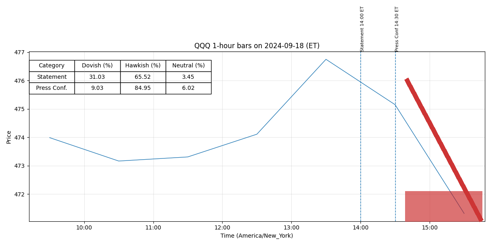

Comparison 20240731 vs 20240918
Legend: Interpretation of Colors and Intensities
- Dovish (green): easing, lower rates, accommodative policy.
- Neutral (yellow): balanced or data-dependent stance.
- Hawkish (red): tightening, higher rates, restrictive policy.
Color intensity = strength of stance (darker = stronger).
Purple highlight = newly added strong sentences.
Added / Changed Sentences
For release at 2:00 p.m. EDT September 18, 2024
Recent indicators suggest that economic activity has continued to expand at a solid pace.
Job gains have slowed, and the unemployment rate has moved up but remains low.
Inflation has
made further progress toward the Committee’s 2 percent objective but remains somewhat
elevated.
The Committee has gained greater confidence that inflation is
moving sustainably toward 2 percent, and judges that the risks to achieving its employment and
inflation goals are roughly in balance.
The economic outlook is uncertain, and the Committee is
attentive to the risks to both sides of its dual mandate.
In light of the progress on inflation and the balance of risks, the Committee decided to
lower the target range for the federal funds rate by 1/2 percentage point to 4-3/4 to 5 percent.
In
considering additional adjustments to the target range for the federal funds rate, the Committee
will carefully assess incoming data, the evolving outlook, and the balance of risks.
The
Committee will continue reducing its holdings of Treasury securities and agency debt and
agency mortgage‑backed securities.
The Committee is strongly committed to supporting
maximum employment and returning inflation to its 2 percent objective.
The Committee
would be prepared to adjust the stance of monetary policy as appropriate if risks emerge that
(more)
-2-
could impede the attainment of the Committee’s goals.
Voting for the monetary policy action were Jerome H. Powell, Chair; John C. Williams,
Vice Chair; Thomas I. Barkin; Michael S. Barr; Raphael W. Bostic; Lisa D. Cook; Mary C.
Daly; Beth M. Hammack; Philip N. Jefferson; Adriana D. Kugler; and Christopher J. Waller.
Voting against this action was Michelle W. Bowman, who preferred to lower the target range for
the federal funds rate by 1/4 percentage point at this meeting.
For release at 2:00 p.m. EDT September 18, 2024
Decisions Regarding Monetary Policy Implementation
The Federal Reserve has made the following decisions to implement the monetary policy stance
announced by the Federal Open Market Committee in its statement on September 18, 2024:
• The Board of Governors of the Federal Reserve System voted unanimously to lower the
interest rate paid on reserve balances to 4.9 percent, effective September 19, 2024.
• As part of its policy decision, the Federal Open Market Committee voted to direct the Open
Market Desk at the Federal Reserve Bank of New York, until instructed otherwise, to
execute transactions in the System Open Market Account in accordance with the following
domestic policy directive:
"Effective September 19, 2024, the Federal Open Market Committee directs the Desk to:
o Conduct standing overnight repurchase agreement operations with a minimum bid
rate of 5 percent and with an aggregate operation limit of $500 billion.
o Conduct standing overnight reverse repurchase agreement operations at an
offering rate of 4.8 percent and with a per-counterparty limit of $160 billion per
day.
• In a related action, the Board of Governors of the Federal Reserve System voted
unanimously to approve a 1/2 percentage point decrease in the primary credit rate to
5 percent, effective September 19, 2024.
In taking this action, the Board approved
requests to establish that rate submitted by the Board of Directors of the Federal Reserve
Bank of Atlanta.
(more)
-2-
This information will be updated as appropriate to reflect decisions of the Federal Open Market
Committee or the Board of Governors regarding details of the Federal Reserve's operational tools
and approach used to implement monetary policy.
20240731

20240918
